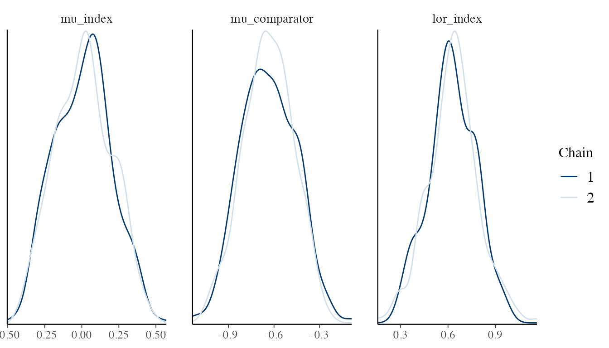
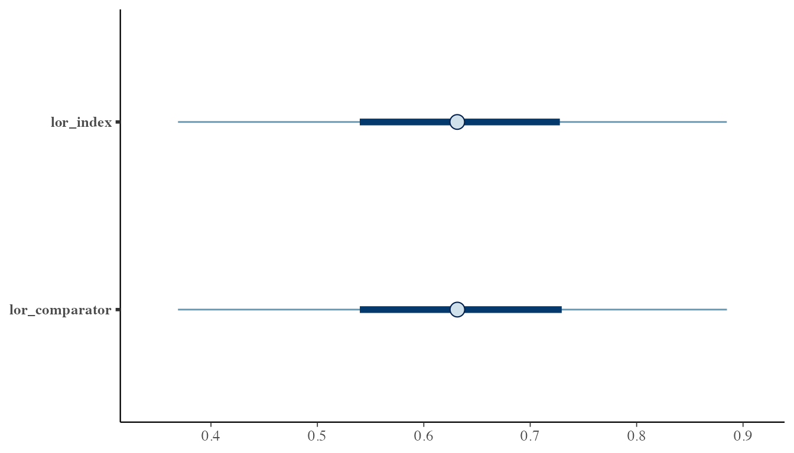

Overview
The mlumr() function fits Bayesian multilevel unanchored
meta-regression models using Stan. The default backend is
rstan; cmdstanr can be used when it is
installed and configured. Three outcome families are supported: binary
(binomial), continuous (normal), and count (Poisson). Two model types
are available for each family:
- SPFA (Shared Prognostic Factor Assumption): shared regression coefficients across treatments
- Relaxed SPFA: treatment-specific regression coefficients, allowing effect modification
Model specification
Binary outcomes (binomial)
The SPFA model assumes that covariates affect outcomes equally for both treatments. The model is:
where is shared across both treatments. The AgD likelihood integrates over the comparator population covariate distribution using QMC points.
The Relaxed model allows treatment-specific effects:
This captures effect modification when covariate effects differ between treatments. The difference quantifies treatment-by-covariate interaction.
Continuous outcomes (normal)
For continuous outcomes, the SPFA model is:
The AgD likelihood uses the mean and standard error of the observed
outcome. The generated quantities include mean differences
(delta_index, delta_comparator) as the primary
treatment effect measure.
An additional prior_sigma parameter controls the prior
on the residual standard deviation
.
The default is a half-normal prior induced by Stan’s
<lower=0> constraint; half-Student-t and exponential
priors are also available through the prior constructors.
Fitting models
The chunks below all use a small toy dat built from the
same pipeline as vignette("data-preparation"). Run this
setup chunk first so the subsequent fitting, summary, prediction, and
comparison calls have something to operate on.
library(mlumr)
set.seed(2026)
trial_a_data <- data.frame(
trt = "Drug_A",
response = rbinom(300, 1, 0.55),
age_cat = rbinom(300, 1, 0.40),
sex = rbinom(300, 1, 0.55)
)
trial_b_data <- data.frame(
trt = "Drug_B",
n_total = 400,
n_events = 160,
age_cat_mean = 0.35,
sex_mean = 0.50
)
ipd <- set_ipd(trial_a_data, treatment = "trt", outcome = "response",
covariates = c("age_cat", "sex"))
agd <- set_agd(trial_b_data, treatment = "trt",
outcome_n = "n_total", outcome_r = "n_events",
cov_means = c("age_cat_mean", "sex_mean"),
cov_types = c("binary", "binary"))
dat <- combine_data(ipd, agd)
dat <- add_integration(dat, n_int = 64,
age_cat = distr(qbern, prob = age_cat_mean),
sex = distr(qbern, prob = sex_mean))
# SPFA model (default)
fit_spfa <- mlumr(
dat, model = "spfa",
chains = 2, iter = 500, warmup = 250,
seed = 42, refresh = 0, verbose = FALSE
)
# Relaxed SPFA
fit_relaxed <- mlumr(
dat, model = "relaxed",
chains = 2, iter = 500, warmup = 250,
seed = 43, refresh = 0, verbose = FALSE
)Controlling the sampler
fit <- mlumr(
dat,
model = "spfa",
chains = 4, # Number of MCMC chains
iter = 4000, # Total iterations per chain
warmup = 2000, # Warmup iterations
seed = 42, # For reproducibility
adapt_delta = 0.99, # Increase for divergences
max_treedepth = 15, # Maximum tree depth
refresh = 500 # Print progress every 500 iterations
)The backend can be selected per fit. The code below runs the same
small demonstration model with each available engine and records elapsed
wall-clock time. rstan uses the model compiled into the
installed R package. The first cmdstanr call may include
external executable compilation or cache setup, so the table reports
cold and warm cmdstanr runs separately. For repeated
analyses, the warm-cache cmdstanr row is the more relevant
comparison.
run_backend_timed <- function(engine, run, note, seed = 2026, ...) {
start_time <- proc.time()[["elapsed"]]
fit <- tryCatch(
mlumr(
dat,
model = "spfa",
engine = engine,
chains = 2,
iter = 300,
warmup = 150,
seed = seed,
refresh = 0,
verbose = FALSE,
...
),
error = function(e) e
)
elapsed <- proc.time()[["elapsed"]] - start_time
if (inherits(fit, "error")) {
return(data.frame(
run = run,
engine = engine,
status = "failed",
elapsed_seconds = round(elapsed, 2),
lor_comparator_mean = NA_real_,
max_rhat = NA_real_,
min_ess = NA_real_,
note = conditionMessage(fit),
stringsAsFactors = FALSE
))
}
lor_comp <- marginal_effects(fit, effect = "lor", population = "comparator")
data.frame(
run = run,
engine = engine,
status = "ran",
elapsed_seconds = round(elapsed, 2),
lor_comparator_mean = round(lor_comp$mean, 3),
max_rhat = round(max(fit$summary$Rhat, na.rm = TRUE), 3),
min_ess = round(min(fit$summary$n_eff, na.rm = TRUE), 1),
note = note,
stringsAsFactors = FALSE
)
}
cmdstanr_ready <- requireNamespace("cmdstanr", quietly = TRUE) &&
isTRUE(tryCatch({
nzchar(cmdstanr::cmdstan_path())
}, error = function(e) FALSE))
backend_speed <- run_backend_timed(
engine = "rstan",
run = "rstan",
note = "Package-compiled model, already used above"
)
if (cmdstanr_ready) {
backend_speed <- rbind(
backend_speed,
run_backend_timed(
engine = "cmdstanr",
run = "cmdstanr_cold",
note = "First call; may include compile/cache setup"
),
run_backend_timed(
engine = "cmdstanr",
run = "cmdstanr_warm",
note = "Second call; executable/cache already available"
),
run_backend_timed(
engine = "cmdstanr",
run = "cmdstanr_warm_parallel",
note = "Warm cache with two parallel chains",
parallel_chains = 2
)
)
} else {
backend_speed <- rbind(
backend_speed,
data.frame(
run = "cmdstanr",
engine = "cmdstanr",
status = "skipped",
elapsed_seconds = NA_real_,
lor_comparator_mean = NA_real_,
max_rhat = NA_real_,
min_ess = NA_real_,
note = "cmdstanr or CmdStan is not available in this R session",
stringsAsFactors = FALSE
)
)
}
backend_speed
#> run engine status elapsed_seconds lor_comparator_mean
#> 1 rstan rstan ran 0.76 0.632
#> 2 cmdstanr_cold cmdstanr failed 0.84 NA
#> 3 cmdstanr_warm cmdstanr failed 0.61 NA
#> 4 cmdstanr_warm_parallel cmdstanr failed 0.58 NA
#> max_rhat min_ess
#> 1 1.003 76.1
#> 2 NA NA
#> 3 NA NA
#> 4 NA NA
#> note
#> 1 Package-compiled model, already used above
#> 2 An error occured during compilation! See the message above for more information.
#> 3 An error occured during compilation! See the message above for more information.
#> 4 An error occured during compilation! See the message above for more information.For production analyses, choose the backend based on your local
toolchain, diagnostics, and workflow. cmdstanr is often
faster after the executable is compiled, especially with parallel chains
and longer runs, but this is not guaranteed for tiny demonstration fits.
In short examples, compilation, process startup, and CSV readback can
dominate the timing. Posterior estimates should be similar up to Monte
Carlo error when the same model, data, priors, and sampler settings are
used.
Setting priors
By default, weakly informative Normal(0, 10) priors are
used for intercepts and Normal(0, 2.5) priors are used for
regression coefficients. Normal, Student-t, and Cauchy priors are
available for intercepts and regression coefficients. For normal-family
residual standard deviations, prior_sigma also supports an
exponential prior.
fit <- mlumr(
dat,
model = "spfa",
prior_intercept = prior_normal(0, 10), # Default
prior_beta = prior_normal(0, 2.5) # More informative for betas
)Per-covariate beta priors and autoscaling are supported:
fit <- mlumr(
dat,
model = "spfa",
prior_beta = list(
prior_normal(0, 2.5, autoscale = TRUE),
prior_normal(0, 1.5, autoscale = TRUE)
)
)Inspect the priors actually passed to Stan, including autoscaled beta scales:
prior_summary(fit)Inspecting results
Print and summary
# Quick overview
print(fit_spfa)
#> ML-UMR Fit
#> ==========
#>
#> Model: SPFA (Shared Prognostic Factors)
#> Family: Binary
#> Link: logit
#> Engine: rstan
#> Treatments:
#> Index (IPD): Drug_A
#> Comparator (AgD): Drug_B
#>
#> Data:
#> IPD: n = 300 observations
#> AgD: 1 rows
#> Covariates: 2
#> Integration points: 64
#>
#> Sampling:
#> Chains: 2
#> Iterations: 500 (warmup: 250 )
#>
#> Key Parameters:
#> variable mean sd 2.5% 97.5% Rhat
#> mu_index 0.01040724 0.19159214 -0.33074665 0.3815756 1.0072054
#> mu_comparator -0.63607867 0.17006929 -0.95953531 -0.3209510 1.0154031
#> lor_index 0.62933865 0.15292754 0.31988979 0.9268537 0.9964877
#> lor_comparator 0.62968799 0.15303636 0.31997526 0.9284606 0.9964885
#> rd_index 0.15534209 0.03716764 0.07954897 0.2274495 0.9964327
#> rd_comparator 0.15531861 0.03719440 0.07955894 0.2276036 0.9964324
#>
#> Use summary() for full results
# Detailed summary
summary(fit_spfa)
#> ML-UMR Model Summary
#> ====================
#>
#> Model: SPFA
#> Family: Binary
#> Link: logit
#> Engine: rstan
#> Treatments: Drug_A (IPD) vs Drug_B (AgD)
#>
#> MCMC Diagnostics:
#> Divergent transitions: 0
#> Max treedepth hits: 0
#> Max Rhat: 1.016
#> Min ESS: 149
#>
#> Intercepts (logit scale):
#> variable mean sd 2.5% 97.5% Rhat
#> mu_index 0.01040724 0.1915921 -0.3307466 0.3815756 1.007205
#> mu_comparator -0.63607867 0.1700693 -0.9595353 -0.3209510 1.015403
#>
#> Regression Coefficients:
#> variable mean sd 2.5% 97.5% Rhat
#> beta[1] -0.1538366 0.2480568 -0.6437745 0.3240322 0.9976325
#> beta[2] 0.5748965 0.2306527 0.1285506 1.0311792 1.0164810
#>
#> Marginal Treatment Effects:
#> Log Odds Ratios:
#> variable mean sd 2.5% 97.5%
#> lor_index 0.6293387 0.1529275 0.3198898 0.9268537
#> lor_comparator 0.6296880 0.1530364 0.3199753 0.9284606
#> Risk Differences:
#> variable mean sd 2.5% 97.5%
#> rd_index 0.1553421 0.03716764 0.07954897 0.2274495
#> rd_comparator 0.1553186 0.03719440 0.07955894 0.2276036
#> Risk Ratios:
#> variable mean sd 2.5% 97.5%
#> rr_index 1.390010 0.1108687 1.182237 1.622135
#> rr_comparator 1.394113 0.1115285 1.182954 1.627734Marginal treatment effects
The main quantities of interest are population-level treatment effects, marginalized over the covariate distribution:
# All effects in both populations
marginal_effects(fit_spfa)
#> variable effect population mean sd q2.5 q50
#> 1 lor_index LOR Index 0.6293387 0.15292754 0.31988979 0.6314306
#> 2 lor_comparator LOR Comparator 0.6296880 0.15303636 0.31997526 0.6315472
#> 3 rd_index RD Index 0.1553421 0.03716764 0.07954897 0.1559863
#> 4 rd_comparator RD Comparator 0.1553186 0.03719440 0.07955894 0.1559871
#> 5 rr_index RR Index 1.3900103 0.11086865 1.18223749 1.3820488
#> 6 rr_comparator RR Comparator 1.3941131 0.11152855 1.18295444 1.3875143
#> q97.5
#> 1 0.9268537
#> 2 0.9284606
#> 3 0.2274495
#> 4 0.2276036
#> 5 1.6221352
#> 6 1.6277336
# Log odds ratios only
marginal_effects(fit_spfa, effect = "lor")
#> variable effect population mean sd q2.5 q50
#> 1 lor_index LOR Index 0.6293387 0.1529275 0.3198898 0.6314306
#> 2 lor_comparator LOR Comparator 0.6296880 0.1530364 0.3199753 0.6315472
#> q97.5
#> 1 0.9268537
#> 2 0.9284606
# In index population only
marginal_effects(fit_spfa, effect = "lor", population = "index")
#> variable effect population mean sd q2.5 q50 q97.5
#> 1 lor_index LOR Index 0.6293387 0.1529275 0.3198898 0.6314306 0.9268537
# Full posterior draws (for custom summaries)
lor_draws <- marginal_effects(fit_spfa, effect = "lor", summary = FALSE)
head(lor_draws)
#> lor_index lor_comparator
#> 1 0.5434681 0.5434656
#> 2 0.6593035 0.6593200
#> 3 0.6041779 0.6041931
#> 4 0.5589187 0.5589707
#> 5 0.5902156 0.5903818
#> 6 0.6826545 0.6834941Absolute predictions
# Predicted probabilities P(Y=1) for each treatment in each population
predict(fit_spfa, population = "both")
#> treatment population mean sd q2.5 q50 q97.5
#> 1 Drug_A Index 0.5592762 0.02940887 0.5012966 0.5608810 0.6149849
#> 2 Drug_B Index 0.4039341 0.02639029 0.3510900 0.4043648 0.4546752
#> 3 Drug_A Comparator 0.5548165 0.02979489 0.4966729 0.5562745 0.6116150
#> 4 Drug_B Comparator 0.3994979 0.02578193 0.3471624 0.4008205 0.4495810
# On logit scale
predict(fit_spfa, type = "link")
#> treatment population mean sd q2.5 q50 q97.5
#> 1 Drug_A Index 0.2453897 0.1227781 0.005129096 0.2513628 0.4787069
#> 2 Drug_B Index -0.4010963 0.1125463 -0.633384613 -0.3989238 -0.1908146
#> 3 Drug_A Comparator 0.2270086 0.1238128 -0.013268543 0.2311069 0.4612541
#> 4 Drug_B Comparator -0.4194773 0.1106674 -0.650951196 -0.4130421 -0.2071555
# Full posterior draws
pred_draws <- predict(fit_spfa, summary = FALSE)
head(pred_draws)
#> p_index_index p_comparator_index p_index_comparator p_comparator_comparator
#> 1 0.5568814 0.4219061 0.5486799 0.4138366
#> 2 0.5956300 0.4324127 0.5866531 0.4233165
#> 3 0.5553231 0.4056505 0.5477135 0.3982513
#> 4 0.5650387 0.4262221 0.5562769 0.4175339
#> 5 0.5619349 0.4155187 0.5605865 0.4141492
#> 6 0.5573371 0.3888158 0.5563852 0.3877001Conditional predictions and effects
predict() and marginal_effects() report
population-averaged quantities. Use conditional_predict()
and conditional_effects() when the estimand is a specific
covariate profile rather than the index or comparator population.
profiles <- data.frame(
age_cat = c(0, 1),
sex = c(0, 1)
)
# Absolute event probabilities at each profile
conditional_predict(fit_spfa, newdata = profiles)
#> profile treatment mean sd q2.5 q50 q97.5
#> 1 1 Drug_A 0.5025687 0.04753315 0.4180597 0.5043933 0.5942529
#> 2 1 Drug_B 0.3471282 0.03832938 0.2769713 0.3450643 0.4204440
#> 3 2 Drug_A 0.6050757 0.05110535 0.5000981 0.6070703 0.7008318
#> 4 2 Drug_B 0.4471030 0.05517446 0.3474700 0.4456127 0.5561979
# Conditional link-scale, risk-difference, and risk-ratio effects
conditional_effects(fit_spfa, newdata = profiles)
#> profile effect mean sd q2.5 q50 q97.5
#> 1 1 LINK_EFFECT 0.6464859 0.15616833 0.32990456 0.6495544 0.9672391
#> 2 1 RD 0.1554404 0.03773287 0.07976107 0.1566759 0.2325119
#> 3 1 RR 1.4559709 0.13074055 1.20739771 1.4571420 1.7272788
#> 4 2 LINK_EFFECT 0.6464859 0.15616833 0.32990456 0.6495544 0.9672391
#> 5 2 RD 0.1579727 0.03782635 0.08062131 0.1592673 0.2364590
#> 6 2 RR 1.3636326 0.11529619 1.17088201 1.3491895 1.6183026For SPFA binary models, the conditional link-scale effect is constant across profiles because the shared beta cancels on the fitted link scale. Risk differences and risk ratios can still vary by profile because they depend on the absolute baseline probabilities.
Model comparison
Compare SPFA and Relaxed models using DIC:
compare_models(fit_spfa, fit_relaxed)
#>
#> Model Comparison (DIC)
#> ======================
#>
#> Model DIC pD Delta_DIC
#> Relaxed SPFA 419.68 3.88 0.00
#> SPFA 420.17 4.05 0.48
#>
#> Lower DIC = better fit. Delta_DIC > 5 is a rough heuristic for
#> meaningful difference, not a formally calibrated threshold.
#> DIC should not be the sole basis for model selection.You can also compute DIC individually:
dic_spfa <- calculate_dic(fit_spfa)
print(dic_spfa)
#> DIC for ML-UMR Model
#> ====================
#>
#> Model: SPFA
#> DIC: 420.17
#> pD: 4.05
#> D_bar: 416.11MCMC diagnostics
The package automatically warns about:
- Divergent transitions (increase
adapt_delta) - Maximum treedepth hits (increase
max_treedepth) - High Rhat values (> 1.01, run more iterations)
- Low ESS (< 400, run more iterations)
Check diagnostics manually:
# Diagnostics stored in the fit object
fit_spfa$diagnostics$n_divergent
#> [1] 0
fit_spfa$diagnostics$n_max_treedepth
#> [1] 0
# Rhat and ESS from the summary table
max(fit_spfa$summary$Rhat, na.rm = TRUE)
#> [1] 1.016481
min(fit_spfa$summary$n_eff, na.rm = TRUE)
#> [1] 148.6844For visual diagnostics, use the bayesplot package:
library(bayesplot)
pars <- c("mu_index", "mu_comparator", "lor_index")
draws_array <- rstan::extract(fit_spfa$stanfit, pars = pars, permuted = FALSE)
mcmc_dens_overlay(draws_array, pars = pars)
mcmc_intervals(as.matrix(fit_spfa$draws[, c("lor_index", "lor_comparator")]))
Troubleshooting
Identifiability in Relaxed model
The Relaxed model has more parameters. With only one AgD row, the comparator-specific coefficients may be weakly identified. The package warns about this. Consider:
- Using the SPFA model if effect modification is not expected
- Providing multiple AgD subgroups
- Using more informative priors for betas
- Running
prior_sensitivity()to assess how strongly relaxed-model conclusions depend on the beta prior
prior_sensitivity(fit_relaxed, prior_beta_scales = c(1, 2.5, 5, 10))